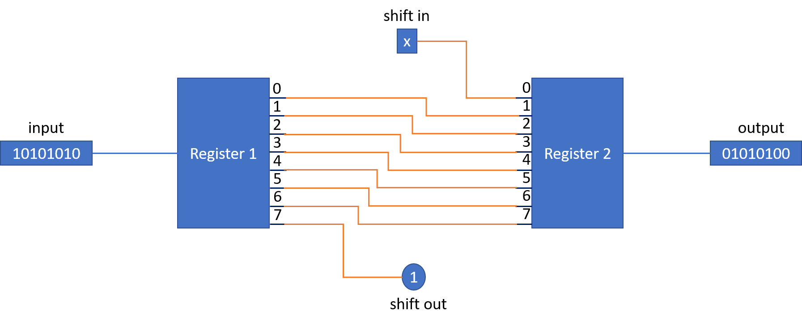

Shift Left / Shift Right Page
Shift Operations Overview
In a shift, we move all of the bits one place to the left or to the right. The bits that move out of the 8-bit value are effectively removed from the number, and the bits that move in to fill the empty bits are generally zeros.
For example:
- If you have **10101010** and you **shift right**, the values become `x1010101`. A `0` moves off to the right, and the "x" (the resulting blank bit at position 7) is typically filled with a `0`.
- If you have the same number, **10101010**, and you **shift left**, the values become `0101010x`. A `1` moves off to the left, and the "x" (the resulting blank bit at position 0) is typically filled with a `0`.
Shift Left Function
To make a **"Shift Left"** function, where the bits move to the left and a zero typically fills the vacated **Bit 0** position, you could follow these detailed steps to wire your circuit:
- Start with two **8-bit Registers**.
- Take the output from the first register and map it to the input of the 2nd register, shifted by one position to the left:
- Map output **Bit 0** to input **Bit 1**.
- Map output **Bit 1** to input **Bit 2**, and so on, up to output **Bit 6** to input **Bit 7**.
- After this mapping, two pins are unused: **output 7** (from the first register) and **input 0** (to the second register).
- Make output **Bit 7** into a 1-bit output from the circuit and call it **"shift out"**.
- Make input **Bit 0** into a 1-bit input to the circuit and call it **"shift in"**.
- The input to the first register is the **8-bit value** you want to shift to the left by 1.
- The output from the second register is the original 8-bit value shifted by 1 to the left.
- **Crucially**, the **"set"** and **"enable"** bits for both registers should be set to **1** so they act as "pass-through" devices (input passes straight through to the output). A **Wiring Constant** can be used for these pins to ensure they are always 1.
Conceptual Circuit Diagram

Circuit Appearance
Once you have created your circuits, you might want to edit the circuit appearance to be something like that shown below: